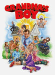

← 2006 →
Overall
Movie Cover Collage Released in 200620 Movies Top 10 series watched
|
Movies released in 2006
 Borat: Cultural Learnings of America for Make Benefit Glorious Nation of Kazakhstan (2006) Releases on 2006-11-03 Stephen Klancher: November 9, 2006 I did think this was funny, but I clearly did not think it was as funny as the rest of the theater.  Talladega Nights: The Ballad of Ricky Bobby (2006) Releases on 2006-08-04 Crank (2006) Releases on 2006-09-01 Pulse (2006) Releases on 2006-08-11 Stephen Klancher: August 22, 2006 I thought this was really creepy and clearly enjoyed it more than most people. A Scanner Darkly (2006) Releases on 2006-08-18 Stephen Klancher: July 24, 2006 Initially saw this in the theater with my dad and felt a little let down by it. I now think that might have been because I was watching it with him and knowing that he couldn't appreciate it. Sometime later I rewatched the second half of this with another perspective and it was amazing.  Grandma's Boy (2006) Releases on 2006-01-06 Stephen Klancher: January 6, 2006 I loved this movie. One of very few movies I went to see a second time in the theater. |
Movie watching by month
![Progress Bar](data:image/png;base64,iVBORw0KGgoAAAANSUhEUgAAASwAAADICAIAAADdvUsCAAAACXBIWXMAAA7EAAAOxAGVKw4bAAAD
D0lEQVR4nO3VsW0bQQBFwbVBwIouVhkMGFHVKGJpbEAVXA1XAcFAMTMxkTNHTgQs8WxopoCP3Ts8
7I/Pz88BX3c6jf1+5uC63pZlmbi5rrfzeZk2N8Z4zK1/ztwDvk6EEBMhxEQIMRFCTIQQEyHERAgx
EUJMhBATIcRECDERQkyEEBMhxEQIMRFCTIQQEyHERAgxEUJMhBATIcRECDERQkyEEBMhxEQIMRFC
TIQQEyHERAgxEUJMhBATIcRECDERQkyEEBMhxHan09jvp82t621Zlm81+IjNdb2dz8u0uTHGGNN/
9NPTr8vlfdriGNt2PR5fJg6OMV5fP56fpx3y7W3+CYeXEHIihJgIISZCiIkQYiKEmAghJkKIiRBi
IoSYCCEmQoiJEGIihJgIISZCiIkQYiKEmAghJkKIiRBiIoSYCCEmQoiJEGIihJgIISZCiIkQYiKE
mAghJkKIiRBiIoSYCCEmQoiJEGIihJgIIbarD8DfnU5jv5+2tq63ZVmmzTGVlxBiIoSYCCEmQoiJ
EGIihJgIISZCiIkQYiKEmAghJkKIiRBiIoSYCCEmQoiJEGIihJgIISZCiIkQYiKEmAghJkKIiRBi
IoSYCCEmQoiJEGIihJgIISZCiIkQYiKEmAghJkKIiRBiIoSYCCG2u98/Lpf3WXPbdj0eX2atPcjc
K4/H3Hr6fzkcDtMHZ619c15CiIkQYiKEmAghJkKIiRBiIoSYCCEmQoiJEGIihJgIISZCiIkQYiKE
mAghJkKIiRBiIoSYCCEmQoiJEGIihJgIISZCiIkQYiKEmAghJkKIiRBiIoSYCCEmQoiJEGIihJgI
ISZCiIkQYiKE2G764v3+cbm8z1rbtuvhcJg+OGvtj0fcetbaf+Tf/4xzTzjG2LarlxBiIoSYCCEm
QoiJEGIihJgIISZCiIkQYiKEmAghJkKIiRBiIoSYCCEmQoiJEGIihJgIISZCiIkQYiKEmAghJkKI
iRBiIoSYCCEmQoiJEGIihJgIISZCiIkQYiKEmAghJkKIiRBiIoSYCCH2GwcmfPAmHG1tAAAAAElF
TkSuQmCC)
Series watching by month
 |